| About Us | Special Thanks | Site Map |
|||||||||
| About Us | Special Thanks | Site Map |
|||||||||
 |
| ・・ん？なんかまぶしいっ・・ (+_+) 。 ベッドルームの窓から入ってくる朝日の光で目が覚めました。 今日の午前中は天気がよくない、という話を昨日聞いていたので、 のんびり起きるつもりだったのだけど・・。 予想に反して、とてもよいお天気のようです。 これはうれしい誤算かな？ |
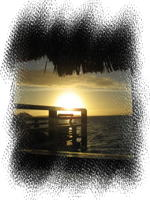 窓から差し込む朝日 |
|
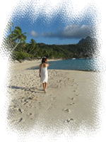 朝の散歩１ |
あわてて起きて身支度～。 私は日焼け止めクリームを全身に塗りたくります。けっこう面倒。。 これさえなければ、もっと早く支度できるのに。 毎日全身に塗っているので、日本から持参したクリームはもう２本目が空になりそうです。 余裕をもって、多めに持参したほうがよいですよ。 |
| さて、支度ができると、ふたりで朝のお散歩に出かけました。 ホテルのビーチをぶらぶら歩きます。 海に青空が広がり、海風も今日は穏やかで、とても爽やかです。 |
朝の散歩２ |
| 朝食は、昨日と同じモーニングビュッフェ。 鉄板コーナー（？）で、オムレツとフレンチトーストをオーダー。 そして今日もフルーツをたっぷり。 昨日おなかいっぱい食べたのに、不思議と胃もたれもしてないし、 旅行中ずっと、お通じも快腸なんです♪ きっと、パイナップルやパパイヤをたくさん食べてるからなんだろうな～。 （お肉の消化にいいらしい） 南国フルーツ万歳～＼(＾０＾)／ ※次の日からは、雲行きが怪しくなるのですが・・ |
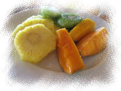 たっぷりのフルーツ |
|
| 今日の午前中は、ヴァイタペでお買い物。 昨日の夕方、ヴァイタペ行きのシャトルバスの予約を入れていました。 ヴァイタペ行きのシャトルバスは、１日２往復で、 午前の便は、９時４５分ホテル発・１１時１５分にヴァイタペ発 午後の便は、２時４５分ホテル発・５時にヴァイタペ発 となります。 往復で、ひとり800CFPです。 |
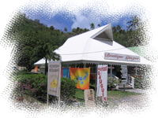 ブティックゴーギャン |
午前のシャトルバス（ホテルのワゴンカー）は、満員で、 （最後に乗った私たちは、補助イスだった） 日本人は私たちだけでした。 バスに乗るとヴァイタペの街まで１５分ほどのドライブ。 途中、道の左手に、「ブティックゴーギャン」がありました。 ここのパレオも見たかったな～。 シャトルバスじゃなくて、レンタルサイクルにすればよかった・・とちょっと後悔。 |
| バスは、パヒア・ショッピングセンター前に到着しました。 （帰りのバスもここから出発） さて、これから１時間１５分のお買い物タイムです。 配り物のおみやげは、明日パペーテでまとめ買いをするつもりなので、 特に、ここでこれを買わなきゃ、というものもありません。 いろんなお店をぶらぶら見て歩きた～い。 でも、ひでくんは、 「行くお店しぼらないと。どこ見るの？」 「全部見てたら時間なくなっちゃうよ」 と、後ろからお母さんのよう・・。 それはごもっともなのだけど、正直歩きにくいです・・。 う～、自由にぶらぶらさせて～～。 |
| ちょうど、ひでくんがトイレに行きたいというので、 ヴァイタペ港前の公衆トイレに行っている間だけ、 私は自由行動を許可されました。 待ち合わせはどこにする？見つからなかった場合は・・？ と、心配そうなひでくん（ＡＢ型）。 なんとかなるよ～、と楽観的な私（Ｂ型）。 だから、お財布も持たせてもらえないのね。。 |
| ヴァイタペ港の方に向かって、お土産屋が連なるところを１軒１軒見て歩きます。 あんまり目新しいお土産はないなあ～。 ・・と、、ヴァイタペ港の前にある、大きめの店（小屋）を見つけました。 （看板には「artisana」と書いてある） 中は市場みたいで、タヒチアンのおばさん・おばあさんが 手作りの貝のアクセサリーや、パレオ、かごなどを売っています。 キオスクみたいなお土産ショップよりも、こういうところがいいね～。 ひでくんを呼んでこようっと。 店を出て港に向かうと、ひでくんは私を捜して道路の向かいを歩いていました。 ごめんなさ～い、妻はここにおりますぅ～～。。 |
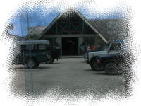 「artisana」 |
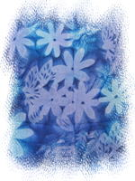 ブルーのパレオ |
ふたりで再び、さっきの「artisana」へ。 ひでくんもここは気に入った様子です。 手染めのパレオがたくさんぶら下がっています。 色もたくさんあって、微妙なグラデーションがきれい。 "BORA BORA" と入っているのが、いかにも土産物っぽくてちょっと余計だけど。。 ブルーのパレオと、小さめの赤系パレオを１枚ずつ購入しました。 あとは、おおきな巻貝の貝殻。お部屋のディスプレイ用に。 |
| あっという間に時間が経ってしまい、もう集合時間まで１５分。 あわてて、スーパー「チンリー」へ。 ここは、大きなスーパーマーケットです。 あんまり時間はなかったけど、お土産コーナーをチェック。 バニラコーヒーと、バニラエッセンスを買いました。 あとは、集合場所近くの土産屋でミニティキ像をゲット。 バス出発時間にギリギリ間に合いました。 ショッピングには１時間じゃ足りな～い。もうちょっといろいろ見たかったな。 |
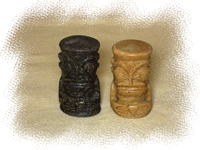 ミニティキ像 |
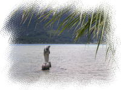 パールショップ付近の謎のイルカ |
帰り道、バスは途中のパールショップに止まりました。 中を案内されたけど、今回パールを買う予定がない私たちは 興味なし。。 （ディスプレイされているのは高そうなのばっかりだし） すぐ店を出て、外の景色を眺めていました。 ここは、オテマヌ山も見えて、いいビュースポットでもあるみたい。 |
| ホテルに戻ると、午後に予約しているジープサファリの集合時間まで、１時間くらい。 スーパーでお昼ごはんを買ってくればよかったのだけど、買う余裕がなかったし。 あんまり時間はないけど、スナック「モイヘレ」へ行くことに。 「モイヘレ」は、マティラビーチ沿いにある、ホテルから一番近いスナックです。 ここもオープンエアーでビーチが一望でき、なかなかよい眺め。 ハムサンド・ハンバーグサンドとパイナップルジュースをオーダーしました。 |
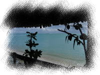 モイヘレからのマティラビーチの眺め |
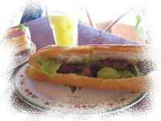 ジュースとフランスパンサンド |
２０分くらい待たされたけど、 ジュースもサンドも、めっちゃおいし～い♪ ジュースは、完熟パイナップルの生絞りジュース、 サンドは、フランスパンをトーストしてあって、外側はパリパリ・サクサクです。 大きなパンだけど、意外とあっさり食べられます。 マヒマヒバーガーもよかったけど、ここのフランスパンサンドはもっとおいしかったな～。 |
| ジープサファリは、ジープで島を一周して、山を登り 山の上の展望ポイントに連れて行ってくれるツアーです。 ランチを食べて部屋に戻ると、アクティビティセンターから電話が。 またしても、時間ぎりぎりで、もう迎えの車がきているようです。 部屋からフロントまでふたりでダッシュ～。 |
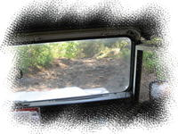 険しい山道 |
フロントに行くと、ジープにはカップルが一組乗っていました。 私たちもあわてて乗り込みます。ふう～、間に合った。。 ジープは、ル・マイタイポリネシアと、ソフィテルマララ？ で一組ずつお客を乗せ、私たちを含め計４組で出発。 ジープはアナウ側の道路をしばらく走り、島の北西部あたりで山道を登ると、 最初のポイントに到着しました。 山頂から周りを眺めると・・、そこはまさに絶景のパノラマ！！ |
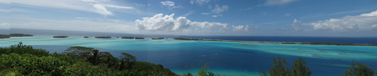
| 一面海が広がっているので、どこを見てよいのか迷ってしまいます。。 ひでくんは、もう周りの景色に夢中で、 あちこちで写真を撮りまくりです。 ※このときはよくわからなかったけれど、 向かいの島に見えるのは空港の滑走路のようです。 |
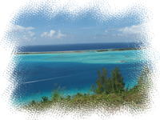 |
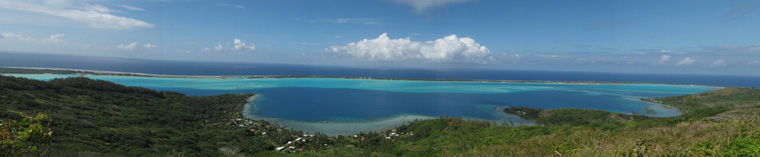
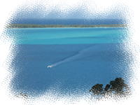 |
１０分くらい景色を眺め、次のポイントに移動です。 山を少し下って、別の道をまた少し登っているようです。 ここからは、南側に湾をはさんでオテマヌ山が見えます。 到着するとひでくんは、 「もう一台デジカメあるから」 と、私に古いほうのデジカメを預けると、またひとりで写真撮影に熱中。 え’’・・・。他の参加者カップルは、ふたり仲良く景色をみたり、 写真を撮り合ったりしてるんだけどな～。 ふたりそれぞれが別のカメラで黙々と写真を撮ってるなんて、ウチぐらいなんですが・・。 こんなのハネムーナーじゃな～い！ |
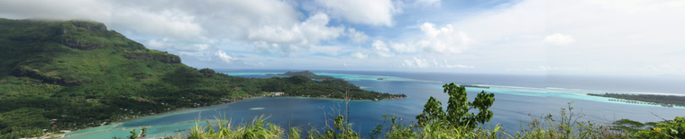
| さて、ヨメが少々ムクレ気分のまま、ジープは次のポイントへ向かいます。 いったん、山道から公道？に下りて、ファーヌイの教会あたりからまた別の山道へ。 今度は、さっきほどひどい山道ではないみたい。 途中で、ドライバーさんが何かを見つけ、ジープを止めます。 車を降りると、なにか果物を取ってきました。 これはグレープフルーツ・・？！緑がかっていて、通常の２倍くらいあります。 そして車はもう少し進み、着いた先には、パレオ屋さんがありました。 位置的には、オテマヌ山を少し登ったところなのかな？ ここでトイレ休憩のようです。 外でちょっと散歩したり、写真をとったり。 ここでは、ひでくんも不機嫌な私に気を使ったのか、 ふたりの写真をたくさん撮ってくれました。 空がだんだん曇ってきてしまったのが残念。。 |
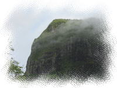 オテマヌ山頂 |
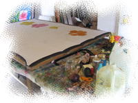 パレオの製作現場 |
パレオ屋さんの中はアトリエになっていて、 手描きパレオが飾られていたり、描きかけのパレオがテーブルに広がっていました。 私たちは買わなかったけど、パレオを買っている参加者もいました。 外に出ると、ドライバーさんが、パイナップルとさっきのグレープフルーツを カットしてくれています。 のどが渇いてたので、フルーツがおいしい。 フルーツを食べると、次の場所に移動です。 また公道に戻り、別の山道に入ります。 |
| 今度は、また荒い山道。 手すりにつかまっていないと、振り落とされそうです。 おまけに途中の急な坂では、 ギリギリまで登って、登りきらずにバックで急降下！！ と、ジェットコースターのようなことも。。 しかも、「生きてるかい～？（英語）」とかいいながら ３回も繰り返しました。。 楽しかったけど、もうぐったり。。 |
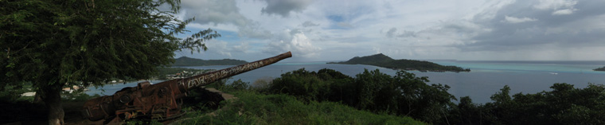
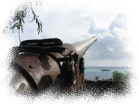 大砲 |
山頂につくと、そこにはアメリカ軍？の大砲が２台ありました。 大砲、けっこう大きいです。 ドライバーさんがいろいろ説明していたようなのですが、 英語なので、ほとんどわかりませんでした。 （日本人は私たちだけだったので、会話は英語メインだった） ここはヴァイタペの手前のようです。 下に見える湾あたりがヴァイタペの街っぽい。 大砲と写真を撮ったりして、また次の場所へ移動です。 |
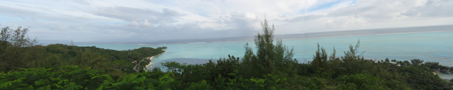
| ヴァイタペの街を通って、また山道へ。 次は、最後のビューポイントです。 ここにはテレビ塔があり、マティラ岬が一望できます。 私たちが滞在した、ホテルボラボラの水上バンガローも見えました！ 山の上から見下ろすなんて、なんだか不思議な気分です。 あそこに泊まっていたんだね～～。 |
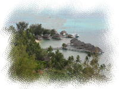 ホテボラ |
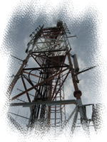 テレビ塔 |
ここの海の景色もきれいなのだけど、 曇ってきたのと、だんだん日が落ちてきたのとで、 海の色が鮮やかに見えなかったのがとても残念。。 ここの景色を重視するなら、午前中のツアーのほうが よいかもしれません。 |
| 山を下りて、ツアーももう終わりかな？とおもったら、 最後に、パールショップへ。（またか・・） ここは、パールの養殖場もあって、 日本人の店員さんが、養殖の仕方などを説明してくれました。 店の中は、やっぱり高そうなパールばかり陳列されているので、 説明が終わるとすぐ、外に出ちゃいました。 店の前には、パールをもったティキ像とか、怪しいオブジェがたくさんあって 私たちは面白がって写真撮ってました。 なぜか、ティキ像の隣に大仏も・・。謎です・・。 誰かがパールを買っていたのか、しばらく待たされたあと、やっとホテルに送迎です。 |
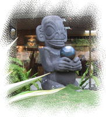 ブラックパール(?)を持ったティキ像 |
| 今晩は、ボラボラ最後の夜です。 部屋に戻って一休みした後、ビーチに沈む夕陽が見にいこう、と 今日ヴァイタペで買った青パレオを巻いて、 マティラビーチへ出かけました。 |
マティラビーチの夕日を受けながら１ |
|
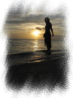 マティラビーチの夕日を受けながら２ |
浜辺を歩いたり、写真を撮ったりしていると 空には夕焼けがどんどん広がっていきます。 一面の海に照らされる夕陽・・。 ほんとにきれいで、うっとりしてしまいます。 |
| ふたりでビーチの石段に座り、 海の向こうに沈んでいく夕陽をしみじみと眺めていました。 この島にくることができて、 こんなにきれいな夕焼けを見ることができて、ほんとによかったね。。 またいつか、この景色を見ることができるかな。。 |
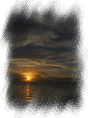 ボラボラ最後の夕陽 |
| ホテルの部屋に戻ると、荷物をまとめておきます。 明日は朝９時半にはチェックアウトなので、 今日のうちに、だいたいはまとめておかないと。 |
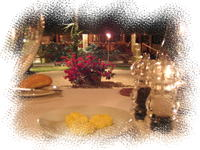 レストラン |
さて、インターコンチ最後のディナーへ。 このレストランの料理は高級フレンチという感じで、 とてもおいしく、私たちは大満足♪ しかも食事代はタダ（宿泊代に込み）とあっては、 わざわざ外のレストランに行く気がしませんでした。 |
| 最後のディナーなので、 今日は、前菜・メインディッシュ・デザートの３皿と、 ワイン（白ワインハーフ）も合わせてオーダー。 ◆ひでくんのセレクトメニュー ・海老の串焼き パイナップルチャツネとレモングラスソース 2630CFP ・サーロインステーキ ベークドポテトとサワークリーム添え 3850CFP ・パイナップル デクリナーション 2000CFP ◆みきのセレクトメニュー ・シーフードとパパイヤのリエッタ トマトチャツネー添え 2800CFP ・ポークテンダーロイン 野菜のポエのコロッケとレモングラスのグレービー添え 3100CFP ・ティラミスとタハア産バニラのパンナコッタ 1500CFP |
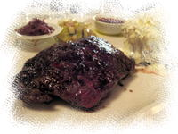 サーロインステーキ |
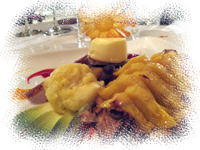 パイナップル デクリナーション |
前菜は、１日目に食べたメニューを再オーダーです。 どれもおいしかった～。 ただ、ステーキは日本のほうがおいしいかな。 （赤身のお肉だからちょっとかたい） |
| またしても、前菜とメインディッシュでおなかがいっぱい・・。 やっぱり肉料理はボリュームがすごい。 私のおなか限界量を超えてます。昨日・おととい以上だ・・。 そんな状態なのに・・、デザートのティラミスがまた絶品！ おいしいのに、全部食べたいのに・・。 味がわからなくなるくらい、おなかが苦しい・・。 私としたことが・・(T-T)。ああ無念。この旅一番の後悔かも。 |
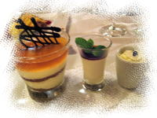 ティラミスとタハア産バニラの パンナコッタ |
| ボラボラ最後の夜のために、ウェルカムシャンパンを残しておいてました。 テラスで星を眺めながら、空けちゃいましょう～。 ・・と思ったのだけど、このおなか・・。 苦しくて、しばらくは何も入りそうにありません。。 「ちょっと休憩させて・・・」 と、ベッドで少し横になることにしました。 |
| ・・・目覚めると、もう０時過ぎ。 いつの間にか２時間ほどうたたねしてしまったようです。 ひでくんも隣で寝ていました。 おなかのほうは、だいぶ落ち着いてきたみたい。 これならシャンパン飲めそう。よかった～。 隣のひでくんを起こしましたが、なかなか起きない・・。 また、無理やり起こしにかかります。（この旅で３回目・・） 最後の夜だよー。シャンパン飲もうよー。起きてよー。 ・・なんとか起きてくれました。やっぱりつらそうだったけども。 |
| テラスでシャンパンを飲みながら、（あんまり飲めなかったけど） 星を眺めます。 南十字星は見れなかったけれど、空は満天の星で 流れ星☆彡が見られました。 明日にはお別れなんて。。帰りたくないよ～～。 |
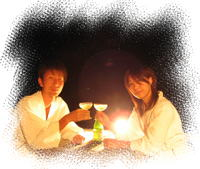 最後の夜 |
<< Previous Day ( 4thDay ) << ｜ top ( 5thDay ) ｜ >> Next Day ( 6thDay ) >> |